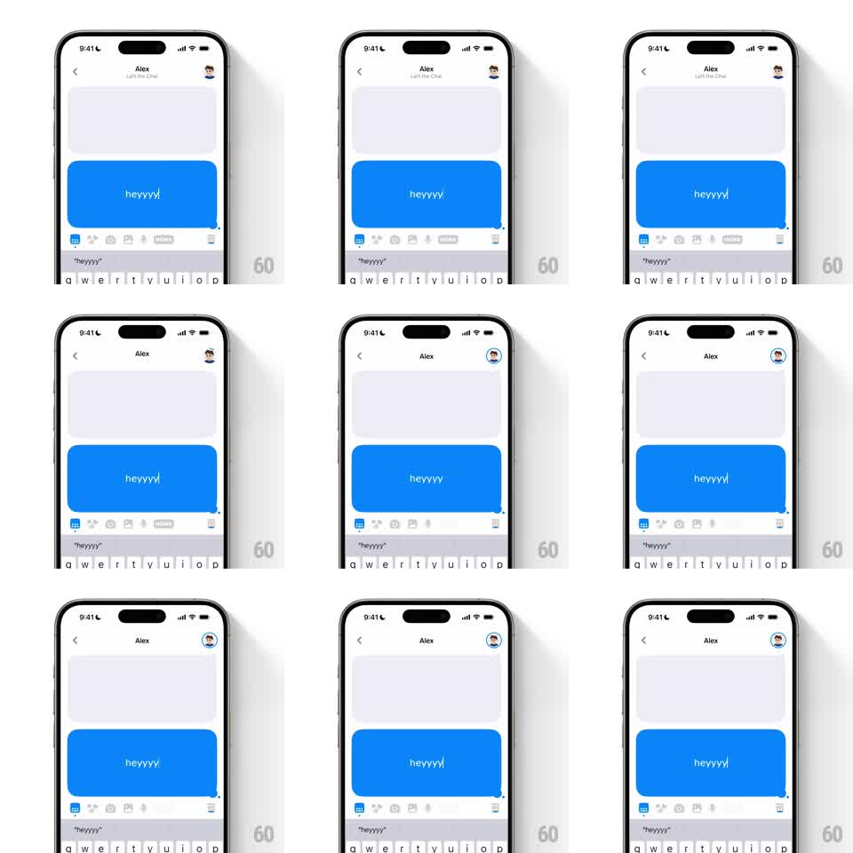

Media
Frame-by-frame

Rebuild this interaction 1:1: Honk's presence indicator - when the friend joins the chat, a presence ring bounces onto their header avatar with a spring, and the subtitle under the name swaps to the live state.

Rebuild this interaction 1:1: Honk's presence indicator - when the friend joins the chat, a presence ring bounces onto their header avatar with a spring, and the subtitle under the name swaps to the live state.
## Integration
Integration: stack-agnostic spec - springs given as stiffness/damping, timed motions as duration + curve; map every value to your framework and animation library of choice.
## Scene
Honk chat with Alex: header with back chevron, centered "Alex", and the friend's avatar top-right; blue live bubble ("heyyyyy") typing below, keyboard open. On join, the avatar gains a colored presence ring (and/or a small badge) and a subtitle line ("Left the Chat" / joined state) under the name updates.
## Motion spec
Pattern: springy presence-ring pop with subtitle swap.
- Join event: the presence ring pops around the avatar (scale 0.5 -> 1.15 -> 1, spring ~340/13, 300ms) - a bouncy entrance with visible overshoot.
- The ring then idles with a soft pulse (scale 1 -> 1.04 -> 1, 2s sine).
- The subtitle swaps in sync: old text slides up and fades (150ms), new status text slides in from below (200ms, 50ms later).
- The avatar itself nudges (scale 1 -> 1.06 -> 1) as the ring lands.
- Leave event reverses: ring shrinks away (scale -> 0.6, fade, 200ms), subtitle returns to the away state.
## Calibration
- The ring color is the presence signal (blue/green for live) - it must contrast clearly with the header's white background.
- Ring pop and subtitle swap happen together, reading as one event.
## Reduced motion
Ring fades in (200ms); subtitle swaps instantly.
## Don't miss
- The indicator hugs the avatar only - the name and chevron never move.
- Typing in the bubble below continues unaffected during the transition.